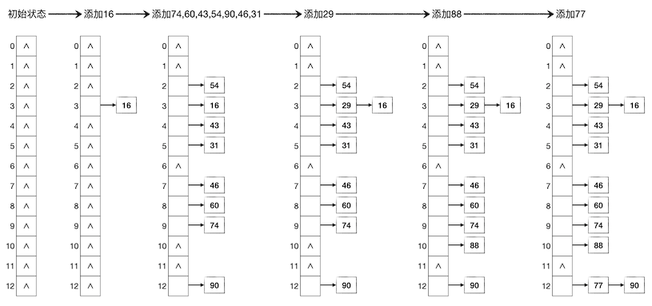
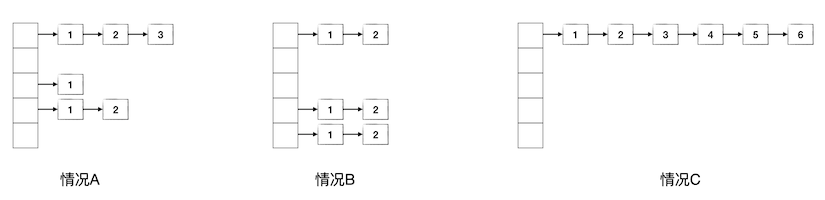
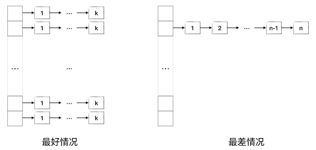

4.3.3. 冲突处理：链式哈希表¶
有了冲突探测技术就够了吗？采用冲突探测技术实现的哈希表存在什么缺点吗？当然有，这种哈希表最大的问题是，底层数组很难实现动态大小。如果事先无法预知数据量，也就无法预先确定底层数组的大小。而一旦填充因子达到上限之后还有新数据项要添加进来，那么要么牺牲效率，要么设法扩张底层数组。但是扩张底层数组的长度有几个难点：一是扩多少很难定，二是找一个大质数很费时间，三是最大的问题，所有表中已有的数据项都需要重新哈希，全体搬家。所以扩张底层数组说说看容易做做看难，尤其是表本身已经很大的时候再做扩张可能会非常费时。如果干脆牺牲效率，让填充因子进一步扩大，那也最多只能到全部填满，如果数据项的数量超过了底层数组的长度还是免不了要扩张底层数组本身。
所以对于那些数据量很大而且事先无法预计的场景，采用冲突探测法就显得不太合适了。这时候我们一般会使用另一种处理哈希冲突的方法，构建链式哈希表。
4.3.3.1. 链式哈希表¶
链式哈希表，顾名思义，就是指采用链表结构来存放数据项的哈希表。使用链式存储结构之后，每一个底层数组的元素其实都是一个单链表的头节点，初始时候都是空指针。当一个数据项的哈希值计算完成，确定了它应该存放在底层数组的哪一个位置之后，我们并不是把这个数据项直接存放在数组的这个元素里，而是把它插入到数组元素所指向的那个单链表里。通过这样的方法，所有具有相同哈希值的数据项就在该哈希值所指定的底层数组元素后面形成了一个理论上长度无限的单链表，从而让哈希表可以存放理论上无穷多的数据项。
仍然采用上一节的例子，用长度为13的底层数组构建哈希表，依次存入键值为16,74,60,43,54,90,46,31,29,88,77的11个数据项。这次我们采用链式哈希表，其过程如下图所示：
查找数据项
在链式哈希表中根据键值查找一个数据项是否存在是很简单的一件事情，只需要先计算出键值对应的哈希值，确定它可能存在的单链表的表头所在位置，然后从表头开始顺序向后在单链表中查找即可，这个过程就是单纯的单链表查找过程。
如果是键值合一的情况，一般只需要返回给调用者该数据项是否存在即可。如果是键值分离的情况，这种情况下我们知道数据项往往是一个由键和值两部分构成的结构类型变量，那么一般我们可以通过返回数据项的指针来让调用者可以修改数据项中值的部分，如果查不到这个数据项就返回 NULL。虽然C++推荐用引用来代替指针，但是这里我们无法直接返回数据项的引用，因为如果查找不到这个键值的数据项，可没有“空引用”这种东西可以返回。C++一般用两种解决方案来规避使用指针。一种是用迭代器来代替指针，因为我们以前说过，迭代器其实就是包装过之后的安全的指针。另一种是把查找分为两步，第一步是纯粹的查找，返回一个 bool 值来表示是否存在这个数据项，如果返回了 true 那么调用者可以调用别的函数，例如某个名叫 get() 的成员函数来获取到这个数据项的引用。
添加数据项
在链式哈希表中添加数据项只要先根据键值来查找该数据项，如果查到有这个键值的数据项存在那么直接放弃添加，如果没有那么在单链表的头部插入一个新节点，放入这个数据项即可。键值分离的数据项情况下，有时候根据需要也常把添加数据项和修改数据项的值两种操作结合起来。即如果查找到有这个键值的数据项，那么就用要添加的数据项的值来替换掉原有的那个数据项的值。
甚至有的时候可以允许一键多值的情况存在，即不管该键值是否已经有数据项存在，都把要添加的数据项添加进去。这虽然违背了哈希表的设计要求，但是某些特殊问题下这种规则也会用到。STL库提供的 multiset 和 multimap 两种容器就允许多个等键元素同时放入容器中。
删除数据项
在链式哈希表中删除数据项无非是先查找该数据项，如果找到了，执行单链表的节点删除操作，如果找不到就什么也不做即可。
时间复杂度
综上所述，链式哈希表中的增删查改操作都离不开一次查找，除了一次查找之外，其他操作无非是单链表的增删元素而已。计算哈希值只需要一次常数时间的操作，单链表的增删也都是常数时间的，唯独搜索，根据线性表的知识我们知道是线性时间的，设该链表的长度为 \(k\)，则搜索的平均时间复杂度为 \(O(k)\)。所以对于一个有 \(k\) 个冲突项的键值，增删查改的时间复杂度都是 \(O(k)\)。
但是这个结论是不够的，每一个哈希值的冲突数随时都在变化，而且是不确定的，我们希望知道在一张底层数组长度为 \(p\)、数据项数量为 \(n\) 的哈希表中增删查改的时间复杂度。事实上这是很难精确估计的，但我们可以从一些例子出发尝试了解它的工作量取值范围。由于计算哈希值和增删链表节点都是常数时间，所以我们可以不考虑它们，仅以在链表中查找的步数作为基本工作量来估算时间复杂度。
下面先看三种具体的情况，设在一个底层数组长度为5的链式哈希表中存放了6个元素，有A、B、C三种情况如下图所示，其中数据项节点中的数字表示要查找到该数据项所需要的链表搜索步数：
情况A是比较普通的情况，这种情况下的平均查找步数为：
情况B是一种比较特殊的情况，6个数据项平均地分布在3个链表中，每个链表2个数据项，此时的平均查找步数为：
情况C是另一种特殊情况，6个数据项哈希值全部相同，都集中在一个链表里，此时的平均查找步数为：
现在我们大致可以看出一些端倪。虽然很难计算出像情况A这种普遍现象下的平均工作量的精确期望值，但是从情况B和情况C可以归纳出平均工作量的上下限，即最好情况和最差情况，如下图所示：
显然情况B代表了比较好的状况，我们可以确信，数据项在各条链表中分布越均匀，平均查找工作量就越低。如果完全均匀地分布在 \(q\) 条链表中，每条链表恰好 k 项，那么平均工作量为：
数据项的总数量为 \(n=qk\)，当 \(q\) 达到最大值 \(q=p\) 时，\(k\) 会达到最小，此时的平均查找工作量也达到最小。这就是最佳情况：数据项的数量小于底层数组长度恰为它的倍数且所有数据项完全均匀地分布在所有哈希值上。这种最好情况下的查找时间复杂度为 \(O(\left\lceil{n\over p}\right\rceil)\)。
思考
实际情况下，不能指望数据项的数量 \(n\) 总是底层数组长度 \(p\) 的倍数。通常的情况可以设 \(n=kp+r\)，其中 \(0\le r \lt p\)，即 \(r\) 是余数。这时的最好情况是什么？平均查找工作量会在什么范围内？时间复杂度有没有变化呢？更进一步，能不能推导出工作量的表达式呢？
最差情况当然就是类似情况C的样子，所有数据项集中在一个哈希值上。此时哈希表事实上已经退化成了一个单链表，或者说退化成了线性表。以前已经讲述过，此时查找的平均工作量为：
所以最差情况的查找时间复杂度为 \(O(n)\)。综上所述，链式哈希表增删查改的平均时间复杂度在 \(O(\left\lceil{n\over p}\right\rceil)\) 和 \(O(n)\) 之间。如果哈希函数足够优秀，能够把数据项的哈希值尽可能均匀地分布在 \([0,p)\) 的范围内，那么时间复杂度就会趋近于最好情况，反之如果哈希函数不够好，哈希冲突大量产生，那么就会趋向于退化成线性表的最差情况。
很多实用工程级别的数据结构库中实际上都不会单纯地使用线性冲突探测或者单链表式的哈希表，一般都会使用经过优化的链式结构。比如Java语言容器库中的 HashSet 和 HashMap 这两个基于哈希表的容器，就使用了一种叫做红黑树的高级平衡二叉搜索树结构来代替单链表，从而把查找删除数据项的平均时间复杂度上限降到了非常优秀的 \(O(\log n)\) 级别。但是C++语言STL库的集合容器 set 和映射容器 map 使用的另一套技术，后面我们会进行介绍。
链式哈希表的实现
下面是一个典型的键值合一哈希表的C++实现例子，数据项就是单纯的不重复的非负整数，请看懂这个数据结构的写法。
#include <cstring>
#include <cstdio>
#include <ctime>
#include <cstdlib>
//const int MAXN = 2003;
//const int MAXN = 5003;
//const int MAXN = 10007;
const int MAXN = 20011;
struct LinkedHashTable {
struct _Node {
int _data;
_Node *_next;
_Node() { _next = NULL; }
_Node(int data) { _data = data; _next = NULL; }
};
_Node *_table[MAXN];
int _size;
LinkedHashTable() { memset(_table, 0, sizeof(_table)); _size = 0; }
~LinkedHashTable() { clear(); }
bool empty() const { return !_size; }
int size() const { return _size; }
int _hash(int key) { return key % MAXN; }
void add(int val);
void remove(int val);
void clear();
bool contains(int val);
double alpha() const { return (double)_size / MAXN; }
double avg_steps() const;
};
int main()
{
srand(time(NULL));
LinkedHashTable t;
double target = 0.1;
while (t.size() <= MAXN * 6) {
t.add(rand());
if (t.alpha() >= target) {
printf("size = %6d, alpha = %lf, avg_steps = %lf\n",
t.size(), t.alpha(), t.avg_steps());
t.size() < MAXN ? target += 0.1 : target += 1.0;
}
}
return 0;
}
void LinkedHashTable::add(int val)
{
int h = _hash(val);
if (!_table[h]) {
_Node *new_node = new _Node(val);
_table[h] = new_node;
++_size;
} else {
_Node *p = _table[h];
while (p && p->_data != val) p = p->_next;
if (p) return;
_Node *new_node = new _Node(val);
new_node->_next = _table[h];
_table[h] = new_node;
++_size;
}
}
void LinkedHashTable::remove(int val)
{
int h = _hash(val);
_Node *p = _table[h], *prev = NULL;
while (p && p->_data != val) {
prev = p;
p = p->_next;
}
if (!p) return;
if (prev)
prev->_next = p->_next;
else
_table[h] = p->_next;
delete p;
--_size;
}
void LinkedHashTable::clear()
{
_Node *p;
for (int h = 0; h < MAXN; ++h)
while (_table[h]) {
p = _table[h];
_table[h] = p->_next;
delete p;
}
_size = 0;
}
bool LinkedHashTable::contains(int val)
{
int h = _hash(val);
_Node *p = _table[h];
while (p && p->_data != val) p = p->_next;
return p != NULL;
}
double LinkedHashTable::avg_steps() const
{
int steps = 0;
for (int h = 0; h < MAXN; ++h) {
int s = 0;
_Node *p = _table[h];
while (p) {
steps += (++s);
p = p->_next;
}
}
return (double)steps / _size;
}
在这个例子里，除了几种常规操作外，我们另外增加了两个实验用的成员函数。alpha() 函数用于获取当前的填充因子，avg_steps() 用于获取当前的平均查找次数。在主函数中我们做了一个填充因子和平均查找长度之间关系的实验，我们不断地向表中填入随机数据，在填充因子达到 \(0.1,0.2,\dots,1.0,2.0,\dots,6.0\) 这些个检查点的时候，输出当时的平均查找次数。
我们可以多次测试，也可以改变底层数组长度为不同的值进行对比测试，但都可以发现类似下面这样的输出：
size = 2002, alpha = 0.100045, avg_steps = 1.056444
size = 4003, alpha = 0.200040, avg_steps = 1.105171
size = 6004, alpha = 0.300035, avg_steps = 1.155396
size = 8005, alpha = 0.400030, avg_steps = 1.202748
size = 10006, alpha = 0.500025, avg_steps = 1.254547
size = 12007, alpha = 0.600020, avg_steps = 1.305655
size = 14008, alpha = 0.700015, avg_steps = 1.355440
size = 16009, alpha = 0.800010, avg_steps = 1.403023
size = 18010, alpha = 0.900005, avg_steps = 1.450694
size = 20011, alpha = 1.000000, avg_steps = 1.500625
size = 40022, alpha = 2.000000, avg_steps = 2.007646
size = 60033, alpha = 3.000000, avg_steps = 2.506921
size = 80044, alpha = 4.000000, avg_steps = 3.005597
size = 100055, alpha = 5.000000, avg_steps = 3.503443
size = 120066, alpha = 6.000000, avg_steps = 3.998884
每一次的输出都非常非常地接近，平均查找步数的波动都在0.001左右。这里有几个规律很值得注意和研究：
在填充因子小于1.0，即数据项数量比底层数组长度还小的时候，平均查找步数非常优秀，近乎为1。
填充因子每增加1.0，平均查找步数就增加0.5。这个速度一直不变，即使在填充因子小于1.0时也一样，每增加0.1平均查找步数就增加0.05。这说明平均查找步数是和填充因子成正比的，而且和最佳情况下的平均工作量 \(\frac{k+1}{2}\) 所体现的增长速度完全吻合。填充因子每增加1，就是 \(k\) 增加了1，因此平均查找步数增加了 \(1\over2\)。
理论上的最佳情况下，填充因子为1.0时平均查找步数应该也为1.0。实际的实验结果表明，填充因子为1.0时，平均查找步数为1.5，多了0.5。其他填充因子时也是一样，都是比最佳情况大0.5。这说明理论上的最好情况实际是做不到的，实际上的平均工作量应该是 \(\frac{k}{2}+1\)。
4.3.3.2. 哈希表小结¶
哈希表的原理到此全部介绍完毕，它是一种比线性表更为复杂一些的简单数据结构，用于存放键值对类型的数据项，键值合一是其中一种特例。它能够实现接近于常数时间级别的数据增删查改操作。下面对哈希表进行简单的小结。
使用哈希表的主要目的是为了高效地增删查改数据项，是为了节约时间而不是空间。通常来说哈希表要使用比线性表更多的存储空间。
哈希表的关键是哈希函数，这个哈希函数一定要能让数据项的哈希值尽可能地呈现均匀分布。通常实际情况下很多数据的键值本身的取值并非均匀分布的，有时候甚至会很不均匀。例如身份证号码、电话号码、商品标准编码等字段码类型的键都不是在整个字符串空间中均匀分布的，因此选择一个合适的哈希函数，让哈希值能够在 \([0, p)\) 范围内接近甚至达到均匀分布是最为关键的要点。
冲突探测法和链式哈希表在实现的难度上差距并不大，二者其实都不算太难编程，到底选择谁主要看数据量。如果数据量能够实现预计并且不是太大（百万级以内），那么线性冲突探测法就很好。因为编程毕竟最简单，而且只要控制好填充因子不超过80%，选择一个合适的底层数组长度，那么可以很好得把平均探测次数控制在3次以内，非常接近常数时间。
如果数据量无法实现预计，或者非常大，那么可能用链式哈希表更为合适。填充因子为5.0以内，即数据总量不超过哈希表底层数组长度的五倍时，链式哈希表的平均增删查改时间复杂度还是很接近常数时间的。
总之，在选择实现一个怎样的哈希表时，最为重要的关注点依次是：数据总量、键值的分布情况、哈希函数、底层数组长度。
在算法竞赛问题中绝少遇到需要自己实现一个哈希表的题目，即使有，一般也是简单的模版题。在实际应用中，哈希表也很少作为一个单独的独立使用的数据结构，它大多数时候是被用来作为更复杂数据结构的底层结构。例如集合和映射这样的容器。
如果是键值合一的数据项类型，那么哈希表就事实上相当于实现了一个集合，如果键与值是不同的，那么哈希表事实上就是实现了一个映射。后面我们就将详细介绍一下STL的集合和映射容器。